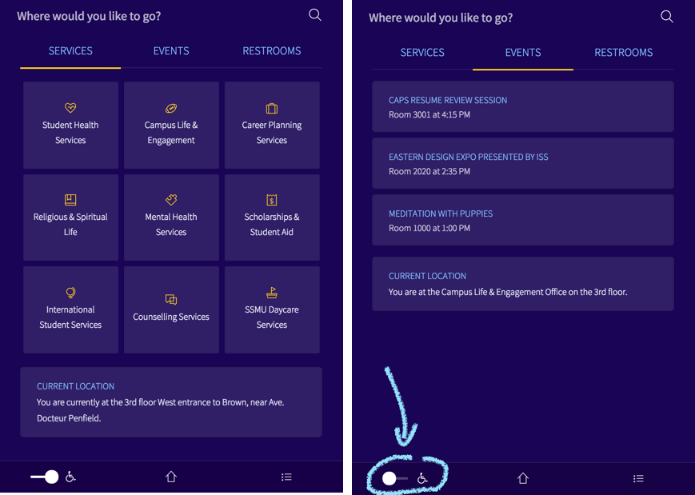
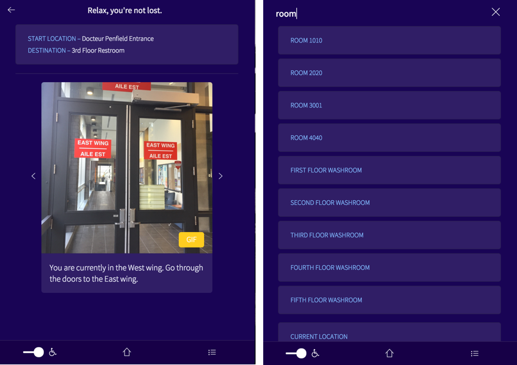

Design evolution
With the feedback we received from our paper prototypes, we evaluated the flaws in our design once again and reviewed the suggested changes pulled from our low-fidelity testing. As a group, we discussed these changes and agreed to work separately on multiple solutions to improve the design. Then, we collaborated to produce a single user interface which we believe to possess the best possible combination of functionality and usability.
The changes we made are summarized below.
1. The interface communicates that the system is for navigation.Several test subjects did not understand that the application with which we presented them was to be used for navigation - even after we had explicitly told them that this was the intention of the application. We have tried to make this more clear on the homescreen: asking the user "Where would you like to go?" as placeholder and title text in a search bar.
2. Categories are displayed as tabs.To free up space for more valuable information (see 1, 3, and 4), we decided to make the home page have tabbed content. The most common destinations are the services and they default as the landing page, however, both 'Events' and 'Restrooms' are both clearly located below the search bar.
Most subjects were confused by what the wheelchair icon on our home screen meant. Many thought it was a link to a map of wheelchair accessible routes, or something similar. We have therefore now moved the button to the navigation screen, and made it an obvious toggle with ON and OFF states. The user can press it if they want to ensure their navigation is wheelchair-friendly.
4. Users are always informed about where they are currently located.Many test subjects in our previous test were confused about their current location when we initiated the navigation. Especially when starting the video timelapses, subjects expressed confusion (sometimes panic!), as they did could not see the connection between their surroundings and where the video started. We have thus included information throughout the prototype, telling the user where they are and reminding them of their route, in order to increase their spatial awareness.
During the previous user test, most subjects were very confused by our long navigation timelapse video, reporting it to be stressing and incomprehensible. However, several of our subjects noted that they liked the concept of timelapses itself. They noted that the clips were 'fun' but simply too long and overwhelming. We therefore chose to keep the timelapse functionality in our prototype, but instead of displaying a single continuous timelapse, the user is now presented with a series of "cards" containing images, GIFs, or both. When a GIF is available, the user can tap the image to play the timelapse. We believe this is a good compromise between the two solutions we tested, seeing as we received some positive feedback for both of the paper prototypes.
Prototype implementation
The prototype we used for testing is available here*.
*Please shrink your browser size down when viewing the web application on your desktop. Due to nature of our system, a desktop-friendly UI was not our priority.User manual and test materials
Usability goals
We hold that the usability goals defined during our low-fidelity testing still hold. So, in the coming high-fidelity usability tests, we wish to ensure the following usability goals are met. Our choice of quantitative measurement for each goal also follow.
- The system should be effective as a wayfinding tool.
- Quantitative measurement: Log the number of subjects who are able to navigate to their destinations without help from the examiners, or from other building resources such as maps. Log how long the users take to navigate to their destination.
- The system's functionality should be immediately understandable.
- Quantitative measurement: Ask the subject to describe the main features of the application, after looking at it for 20 seconds (test task 1). Log how many of the main features (student office navigation, event navigation, bathroom navigation, wheelchair-friendly navigation, room search) the subjects correctly identify.
- The system should be highly accessible to users with physical limitations.
- Quantitative measurement: Ask subjects to initiate wheelchair friendly navigation to a destination (test task 4). Log how many subjects are able to do this without hesitation, and without asking the examiner.
- The system should be easily operable.
- Quantitative measurement: Log the number of times the subjects perform an action which they did not intend (whenever they make a mistake).
- The system should be generally acceptable among users.
- Quantitative measurement: Log the number of times subjects express frustration when using the system. Collect quantified reports of user satisfaction using the post-test questionnaire.
Usability evaluation
In addition to the usability test described in our 'Test Procedure' document, we would like you to do a heuristic evaluation of the prototype. Instructions and Heuristics for this have been taken and summarized from Nielsen’s “How to Conduct a Heuristic Evaluation” and Nielsen’s 10 Usability Heuristics for User Interface Design.
The Heuristic Evaluation should be done by each team member individually in a separate space. Team members should only discuss and combine their findings after all the evaluations are finished. Attached further below, you will find selected heuristics from Nielsen’s list and a justification on why they are relevant to our system. Using this list, go through the interface several times while noting the different elements that make up the interface design, and evaluate them in comparison to the list of heuristics.
As an evaluator, you have freedom in deciding on how to evaluate the heuristics and our system. However, it is recommended that you go through the interface at least twice to guarantee general understanding of the interface. The deliverable for this evaluation is a list of usability issues referencing the specific heuristic(s) that are being violated. This can be given in any form the evaluator prefers.
Note: Since the prototype you are evaluating is not a complete product, it only has a select few navigation routes and features implemented. Please refer to "Prototype Limitations" in the user manual section.
Heuristics:
-
Visibility of system status: “The system should always keep users informed about what is going on, through appropriate feedback within reasonable time.”
Justification: As a navigation application, users should not feel more lost than they already may be, which is why it is vital that users are aware of what the application is doing and where they are in the navigation process.
-
Match between system and the real world: “The system should speak the users' language, with words, phrases and concepts familiar to the user, rather than system-oriented terms. Follow real-world conventions, making information appear in a natural and logical order.”
Justification: The main feature of this system is that it gives directions. If the directions are not clear because of lack of real-word conventions, the system has failed in finding a solution for improving indoor navigation.
-
User control and freedom: “Users often choose system functions by mistake and will need a clearly marked "emergency exit" to leave the unwanted state without having to go through an extended dialogue. Support undo and redo.”
Justification: If a user makes a mistake, there should be a clear exit option otherwise it would be very frustrating for them. For example, they would have to swipe through directions that are not relevant to them in hope that it will return them to the home screen.
-
Consistency and standards: “Users should not have to wonder whether different words, situations, or actions mean the same thing. Follow platform conventions.”
Justification: In the application, there are different ways to find destinations (search option, different menu tabs). It is essential that different options are cohesive and clear to user for them to find their destination.
-
Error prevention: “Even better than good error messages is a careful design which prevents a problem from occurring in the first place. Either eliminate error-prone conditions or check for them and present users with a confirmation option before they commit to the action.”
Justification: The system holds many different directions and options (i.e. handicap option). It is important that the system does anything it can to make sure the right direction and options are chosen as to not waste the user’s time.
-
Recognition rather than recall: “Minimize the user's memory load by making objects, actions, and options visible. The user should not have to remember information from one part of the dialogue to another. Instructions for use of the system should be visible or easily retrievable whenever appropriate.”
Justification: This heuristic centers on our interface being familiar and easy to use which is essential considering the context our system will be used in. It is likely that users will be using the application under time-constraint and confusion trying to get to their destination.
-
Aesthetic and minimalist design: “Dialogues should not contain information which is irrelevant or rarely needed. Every extra unit of information in a dialogue competes with the relevant units of information and diminishes their relative visibility.”
Justification: Users will use this application solely to get directions from their location to their destination. For this reason, the interface design should be minimalistic as possible to ensure that users can simply find their destination without inefficiently spending their time.
-
Help users recognize, diagnose, and recover from errors: “Error messages should be expressed in plain language (no codes), precisely indicate the problem, and constructively suggest a solution.”
Justification: The system should not make users feel more lost as that would defeat the purpose of the system. If they make an error, a solution should be shown so that they can continue their navigation.